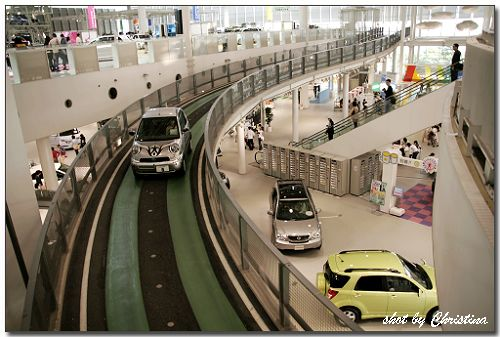
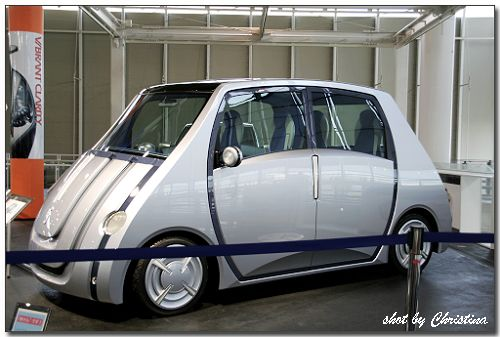
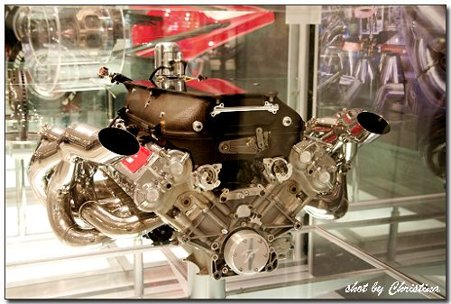

Toyota City Showcase@Tokyo @ May 22, 2007
在东京的丰田汽车展览馆。里面有古老的丰田车和最新的概念车，如果有兴趣的话还可以花点钱在馆内试乘试驾一下，不过好象不用自己开，汽车自己顺着轨道走。就我本人而言只看过法拉利汽车展馆，介绍相关文化及产品，除此之外便是丰田车了。不过没有那个品牌的汽车能象法拉利那样有着悠久的历史和文化，相关产品也特别多。（在平和公园对面看到法拉利在美术馆里做一个展览，匆忙拍了富士山远景之后便冲进馆内观看起来。）当然丰田车对于日本人意义深远。什么时候我们也能有一个大家都拥护和认同的国产品牌汽车就好了！








5 Responses to “Toyota City Showcase@Tokyo”
2007-05-22
不得不承认，日本人造的车，的确很好，日本的车床很好，钢材很好，都很好……
2007-05-23
你的网站和照片不错．
引发了我的摄影热情．也准备上一个D400。 这是我用Sony卡片机拍的http://www.xiongcaocao.com/html/photo/?sid=1&aid=18
2007-06-01
I like it! These photos ,great.
2007-07-11
请问〈丰田汽车展览馆〉每天都开吗？？还是有指定的日期？？如果有指定的日期，那2008年是什么时候呢？？如果可以，请尽快通知我，急用……
谢谢你~~
2007-07-11
我只是去旅游，所以并不清楚是否每天都开。
但看情况似乎应该是每天都开的，我指东京的。因为那就是给大众参观的场馆。
Leave A Reply
存档只读，评论已关闭。